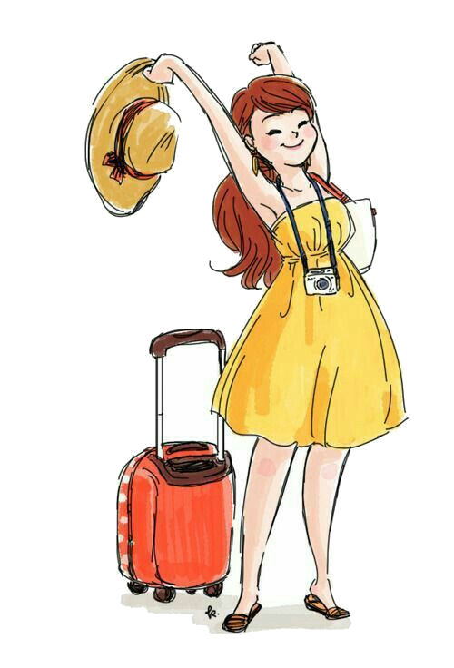
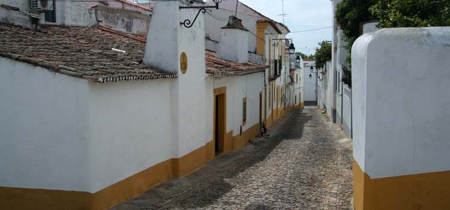
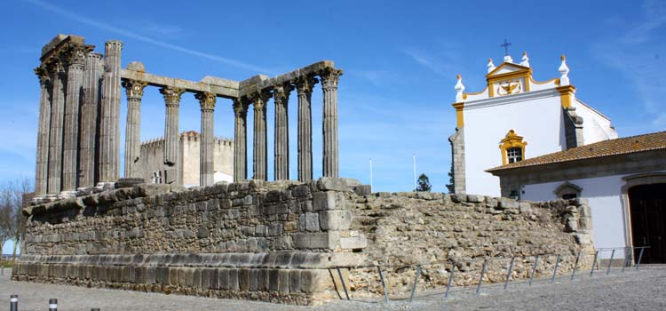
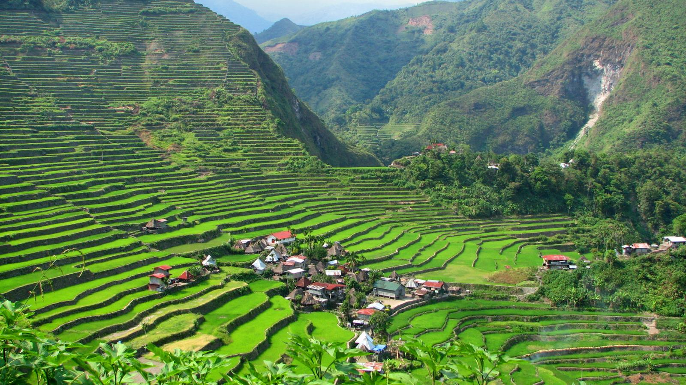
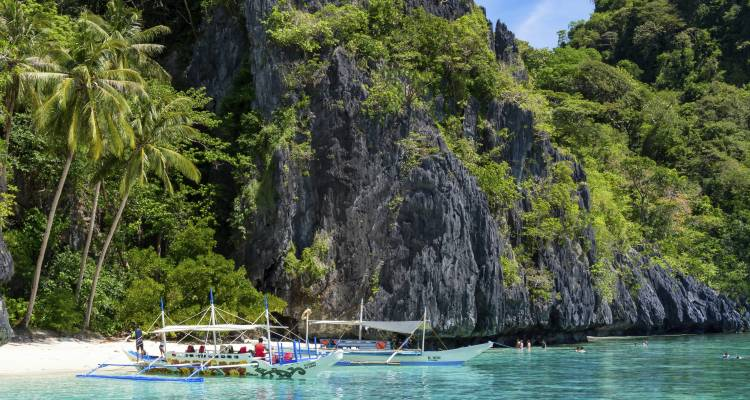
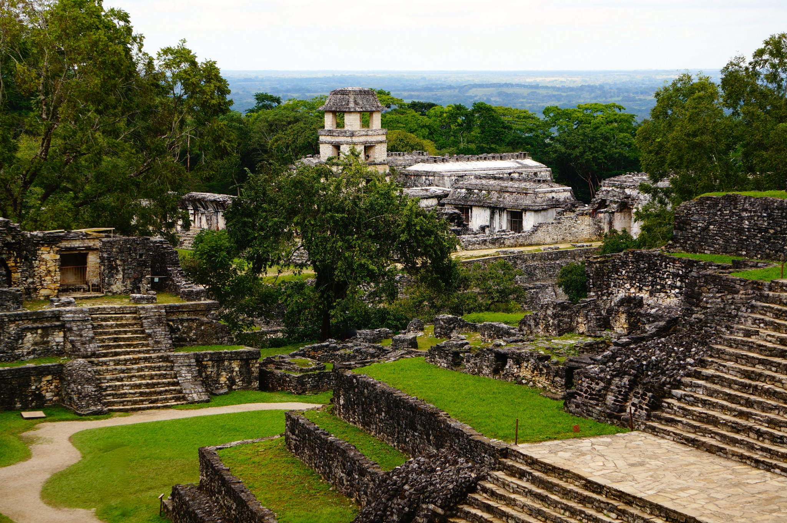
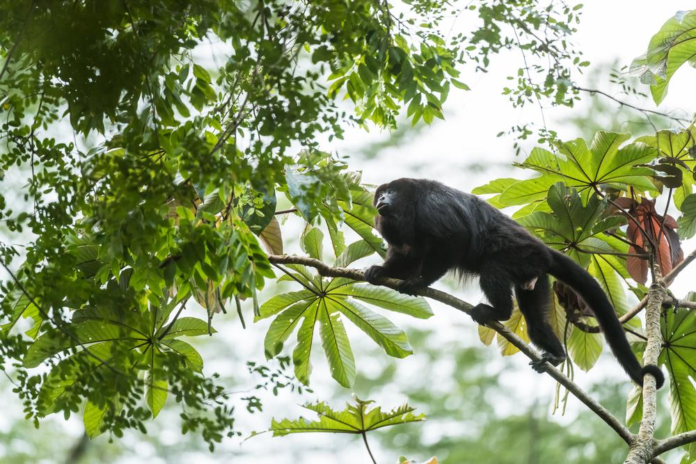
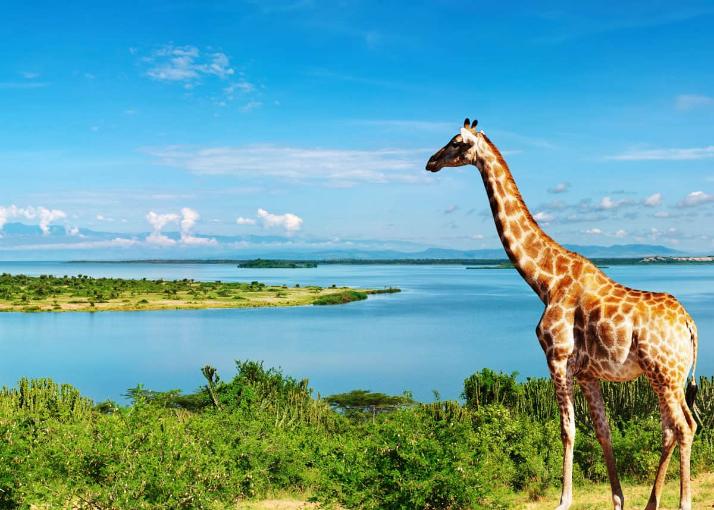
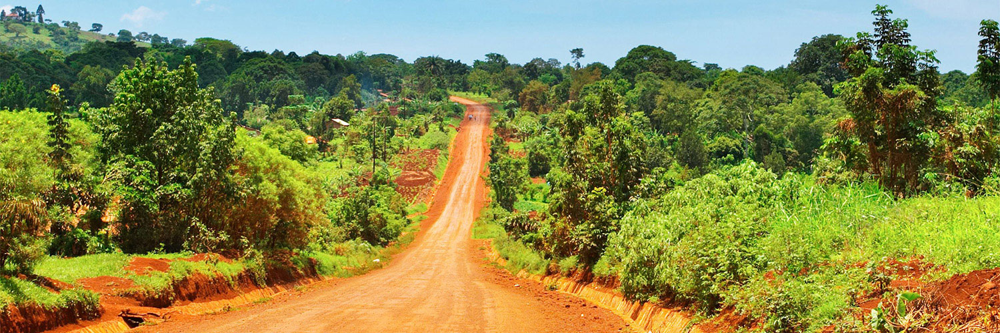

The friendilest places to visit this summer!New

Top 5 countries to visit:
#1 Siem Reap, Cambodia
Hinduism is the oldest religion in the world with various cultures and traditions. The symbolism of a Hindu represented in Hindu temples, found particularly India, but also outside India. Angkor Wat temple complex in Cambodia is dedicated to Hindu god Lord Vishnu. This religious monument is the largest monument in the world and has become a symbol of Cambodia. At the heart of Angkor Thom is the 12th-century Bayon, the mesmerising, if slightly mind-bending, state temple of Jayavarman VII. It epitomises the creative genius and inflated ego of Cambodia’s most celebrated king. Its 54 Gothic towers are decorated with 216 gargantuan smiling faces of Avalokiteshvara, and it is adorned with 1.2km of extraordinary bas-reliefs incorporating more than 11,000 figures. The temple's eastward orientation leads most people to visit in the morning. Unique, even among its cherished contemporaries, the architectural audacity was a definitive political statement about the change from Hinduism to Mahayana Buddhism. Known as the 'face temple' thanks to its iconic visages, these huge heads glare down from every angle, exuding power and control with a hint of humanity. This was precisely the blend required to hold sway over such a vast empire, ensuring the disparate and far-flung population yielded to his magnanimous will. Unlike Angkor Wat, which looks impressive from all angles, Bayon looks rather like a glorified pile of rubble from a distance. It’s only when you enter the temple and make your way up to the third level that its magic becomes apparent.

#2 Historic town of Evora, Portugal

Évora is a World Heritage City in 1986, Portugal stands as a blend of various cultures, empires and architecture. It dates back more than two millennia, and has been occupied by the Romans, Moors and Celts, among other peoples. In Évora, travellers step inside a snapshot of different centuries and cultures. But history isn’t the only charm that brings visitors from all over the world to Évora. The cuisine available at traditional restaurants and the warm and welcoming people are willing to share they way of life. Preservation is key to Évora’s charm since the city prides itself in maintaining its tradition and rich history. Three places to visit in Évora: Temple of Diana, the Silver Water Roman Aqueduct and the Chapel of Bones.
#3 Rice terraces of Luzon, Philippines!

Luzon is the largest island in the archipelago. That landmass extends from the rice basket of the broad, flat Central Plains, where surgar cane, coconuts, and tobacco grow, to mighty mountain ranges of the Cordillera. Must see places are: Manila, the country's capital, amongst its museums North of Binondo is the Chinese Cemetery, one of Manila’s most intriguing sights. The eeriness of ghost-town-like streets lined with luxury tombs, many complete with running water and air-conditioning! If that’s not surreal for you, visit the attached North Cemetery, home to a community of several thousand residents who've remarkably set up houses and shops among the tombs. Ifuago rice terraces, the Unesco-blessed rice terraces, which have been sculpted by indigenous farmers for about 2,000 years. It covers more than 260 sq km (100 sq miles) of steep mountains. The terraces depict an absolute blending of the physical, socio-cultural, economic, religious, and political environment of Ifugao people. Taal Lake, the 300-meter (1,000-ft) high Taal Volcano, a crater within a lake, looms over the landscape two hours’ drive south from Manila. As one of the smallest, most active volcanoes in the world, it smoulders and occasionally rumbles, always a dramatic sight. A banca (pumpboat) can be hired from Talisay to cross the lake, leading to the trailhead for hike hiking up the crater.
#4 Maya ruins in Palenque, Mexico

Palenque is a journey into the history and mysticism of the Mayan Culture where the majesty of its ceremonial centers still echoes from the past. The ancient city of Palenque, which the Mayan built as the village that serves as a starting point to explore the natural wonders, is in the North of Chiapas. Every ruin was built without the benefit of metal tools, the horse or the wheel. This place was created exclusively with the tenacity of human labor. A road framed by waterfalls, leads South to the archaeological zone of Toniná. If you head Southeast, passing through the famous Lacandona Jungle, you will find the remnants of two majestic pre-Hispanic cities: Bonampak and Yaxchilán. It has a huge variety of wildlife, you will experience the sound, smell, and the out-of-this-world-feeling of being inside the jungle, a real jungle, where you will be welcome by the howling of Saraguato monkeys and the footprints of the legendary jaguar; continuing to a refreshing and purifying swim in any of the many crystal-clear turquoise waterfalls you will encounter along the road. Palenque, the Mayan jungle, was declared a World Heritage Site by UNESCO in 1987.
#5 Mountain of gorilla sanctuary Bwindi Impenetrable National Park, Uganda

Bwindi National Park is a highland tropical forest in the south western corner of Uganda in the Albertine Rift Valley - some 2000- 2500 m above sea level is home to almost 30 endemic bird species. The most common bird species are the Regal Sunbird, Handsome Francolin, the African Green Broadbill and the Short Tailed Warbler. A popular bird watching and gorrila trekking place is Ruhija. It is located in the Eastern part of Bwindi Impenetrable National park and has three gorilla families which include Bitukura gorilla family, Oruzogo Gorilla group and Kyaguliro group which is for research. There are other gorilla trekking places such as Buhoma, Nkuringo and Rushaga. The Buhoma area was the first area to be opened up for Gorilla Trekking in 1991. It has become the area with most of the infrastructure including its excellent Community Hospital, lodges, activities such as Mountain Biking, Village walk and the Batwa Experience which is a hike into the forest with the Batwa Pygmies, the first people of the Forest. There are three habituated gorilla families in the Buhoma Area of Bwindi Impenetrable Forest:
